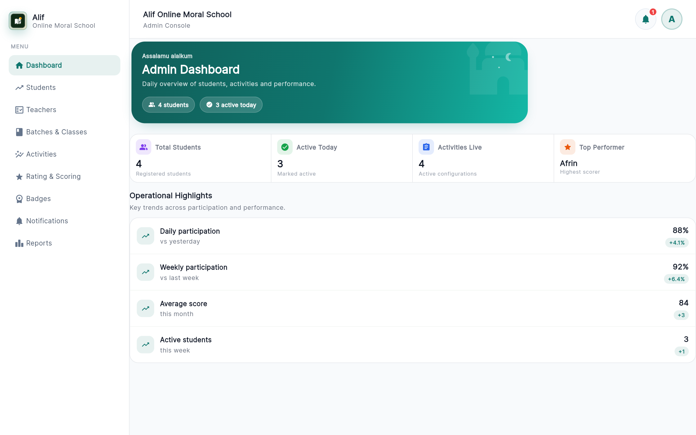
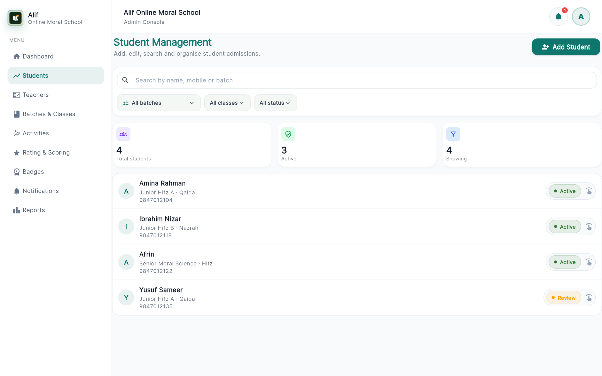
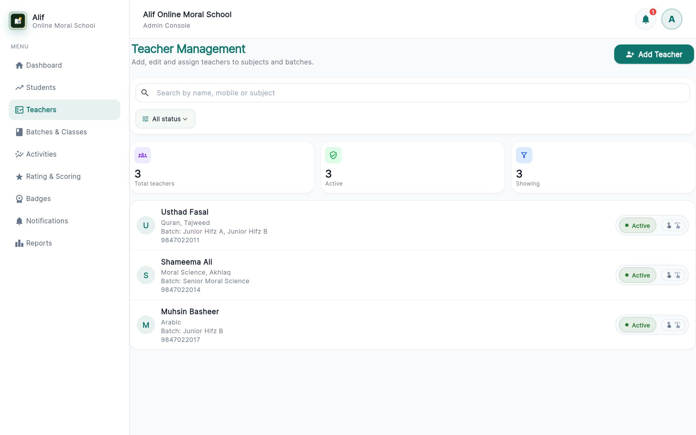
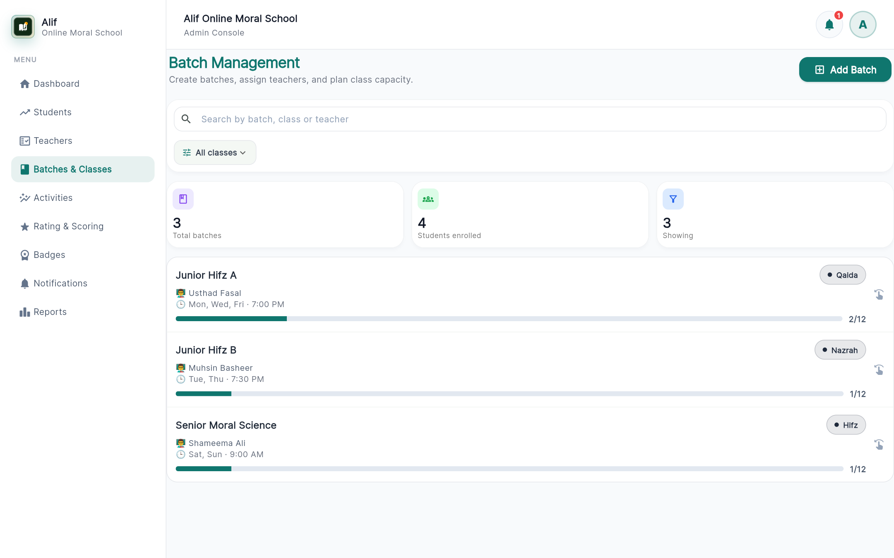
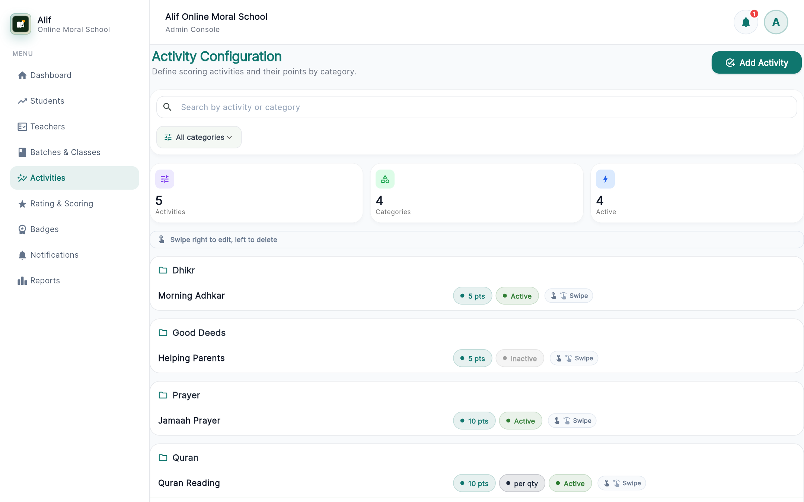
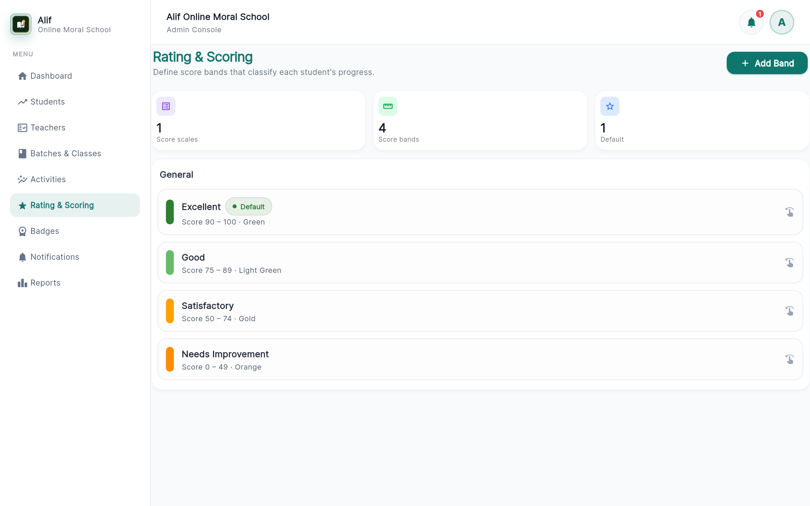
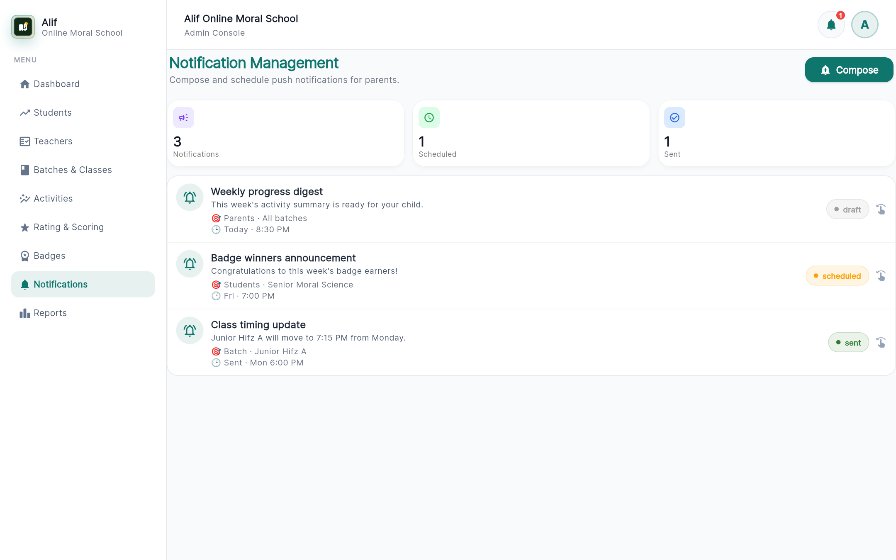
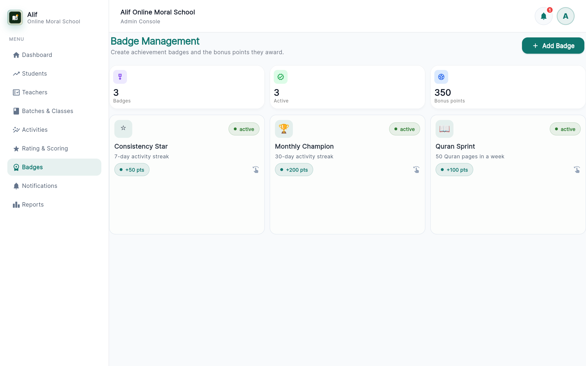
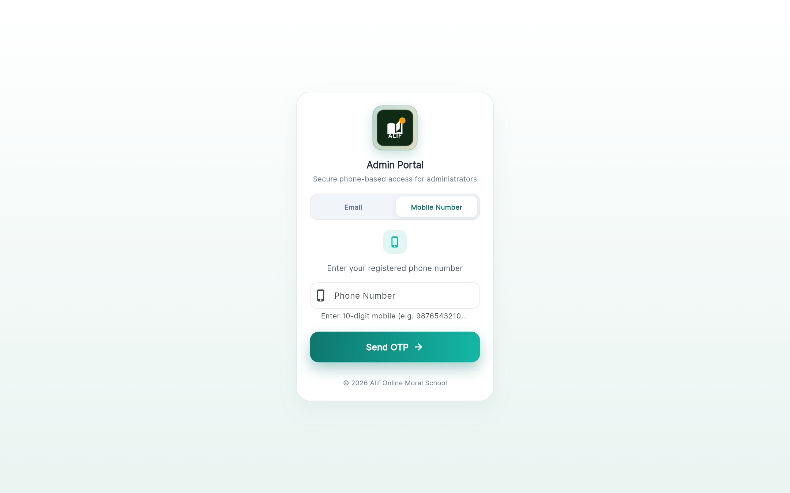
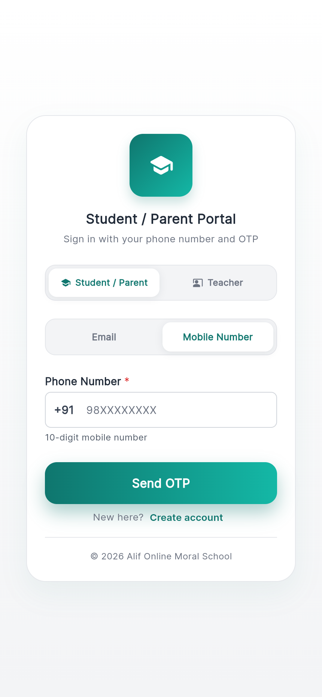

Alif Admin and Student Portal Change Report
Date: 2026-06-25 | Screenshots with one-sentence English summaries
Admin Dashboard (Updated)

The dashboard now restores the old 2x2 KPI layout and each summary card opens its target section on tap.
Student Management Swipe Actions

Student rows now support swipe gestures so edit and delete actions are cleaner and faster on the same list.
Teacher Management Swipe Actions

Teacher rows now include swipe-to-edit and swipe-to-delete with clearer hints for action discoverability.
Batch Management Swipe Actions

Batch items now use swipe actions and remove inline icon clutter for a more focused management flow.
Activity Configuration Swipe Guide

Activity rows now support swipe edit and delete with an explicit guide card that explains the gesture directions.
Rating Configuration Swipe Actions

Rating bands now support grouped swipe actions, replacing direct action icons with a consistent interaction model.
Notification Management Swipe Actions

Notification campaigns now use swipe edit and delete actions for consistency with the rest of the admin modules.
Badge Management Swipe Actions

Badge items now support swipe actions in both list and grid contexts while preserving the existing points label style.
Admin Portal Login (Updated)

The admin portal login is updated to the new OTP-focused entry screen with the refreshed visual style and messaging.
Student Portal Login (Updated)

The student portal login is updated with the redesigned mobile-first authentication screen and clearer entry flow.
Student Portal Switch Option

A dedicated portal switch area is now shown so users can clearly choose the student/parent side with an in-app switching path.